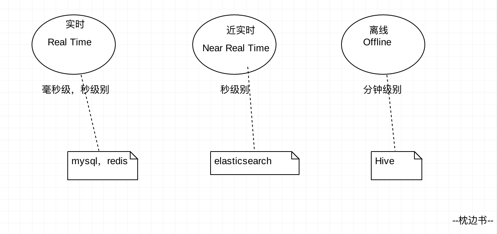
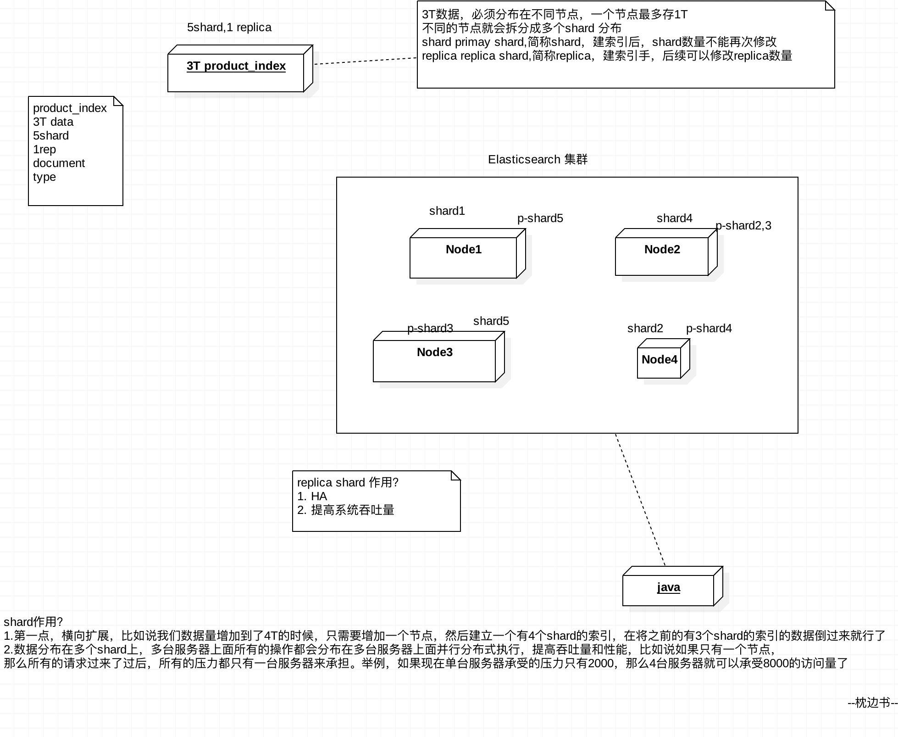

本文讲解大纲，分8个核心概念讲解说明：
Elasticsearch的核心优势就是（Near Real Time NRT）近乎实时，我们称之为近实时。
NRT有两个意思，下面举例说明下：
举个例子：电商平台新上架一个新商品，1秒后用户就可搜索到这个商品信息，这就是近实时。
也举个例子说明，比如我现在想查询我在淘宝，最近一年都买过几件商品，总共花了多少钱，最贵的商品多少钱，哪个月买到东西最多，什么类型的商品买的最多这样的信息，如果淘宝说，你要等待10分钟才能出结果，你是不是很崩溃，这个延迟的时间就不是近实时，如果淘宝可以秒级别返回给你，就是近实时了。
下面画一个图，解释下三个基本概念的

包含多个节点，每个节点属于哪个集群是通过一个配置（集群名称，默认是elasticsearch）来决定的，对于中小型应用来说，刚开始一个集群就一个节点很正常。集群的目的为了提供高可用和海量数据的存储以及更快的跨节点查询能力。
集群中的一个节点，节点也有一个名称（默认是随机分配的），节点名称很重要（在执行运维管理操作的时候），默认节点会去加入一个名称为“elasticsearch”的集群，如果直接启动一堆节点，那么它们会自动组成一个elasticsearch集群，当然一个节点也可以组成一个elasticsearch集群
document 是es中的最小数据单元，一个document可以是一条客户数据，一条商品分类数据，一条订单数据，通常用JSON数据结构表示，每个index下的type中，都可以去存储多个document。一个document里面有多个field，每个field就是一个数据字段。
相当于mysql里的行，可以简单这么理解，举个例子。一个商品的文档数据一条如下：
product document
{
"product_id": "1000",
"product_name": "mac pro 2019 款笔记本",
"product_desc": "高性能，高分辨率，编程必备神器",
"category_id": "2",
"category_name": "电子产品"
}
包含一堆有相似结构的文档数据，比如可以有一个客户索引，商品分类索引，订单索引，索引有一个名称。
一个index包含很多document，一个index就代表了一类类似的或者相同的document。比如说建立一个product index，商品索引，里面可能就存放了所有的商品数据，所有的商品document。
每个索引里都可以有一个或多个type，type是index中的一个逻辑数据分类，一个type下的document，都有相同的field，比如博客系统，有一个索引，可以定义用户数据type，博客数据type，评论数据type。
商品index，里面存放了所有的商品数据，商品document
但是商品分很多种类，每个种类的document的field可能不太一样，比如说电器商品，可能还包含一些诸如售后时间范围这样的特殊field；生鲜商品，还包含一些诸如生鲜保质期之类的特殊field
type，日化商品type，电器商品type，生鲜商品type
日化商品type：product_id，product_name，product_desc，category_id，category_name
电器商品type：product_id，product_name，product_desc，category_id，category_name，service_period
生鲜商品type：product_id，product_name，product_desc，category_id，category_name，eat_period
每一个type里面，都会包含一堆document
{
"product_id": "2",
"product_name": "长虹电视机",
"product_desc": "4k高清",
"category_id": "3",
"category_name": "电器",
"service_period": "1年"
}
{
"product_id": "3",
"product_name": "基围虾",
"product_desc": "纯天然，冰岛产",
"category_id": "4",
"category_name": "生鲜",
"eat_period": "7天"
}
单台机器无法存储大量数据，es可以将一个索引中的数据切分为多个shard，分布在多台服务器上存储。有了shard就可以横向扩展，存储更多数据，让搜索和分析等操作分布到多台服务器上去执行，提升吞吐量和性能。
每个shard都是一个lucene index。
任何一个服务器随时可能故障或宕机，此时shard可能就会丢失，因此可以为每个shard创建多个replica副本。replica可以在shard故障时提供备用服务，保证数据不丢失，多个replica还可以提升搜索操作的吞吐量和性能。
primary shard（建立索引时一次设置，不能修改，默认5个），
replica shard（随时修改数量，默认1个），
默认每个索引10个shard，5个primary shard，5个replica shard，最小的高可用配置，是2台服务器。
相关索引解释说明：
索引在集群中分配图：

本文由博客一文多发平台 OpenWrite 发布！